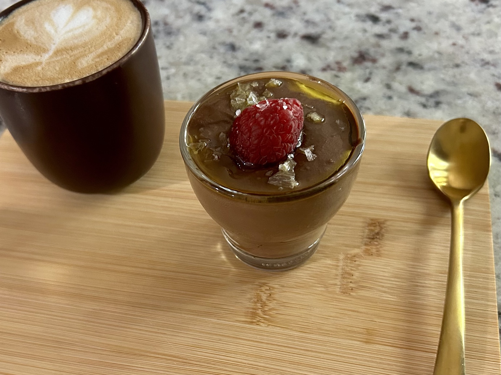
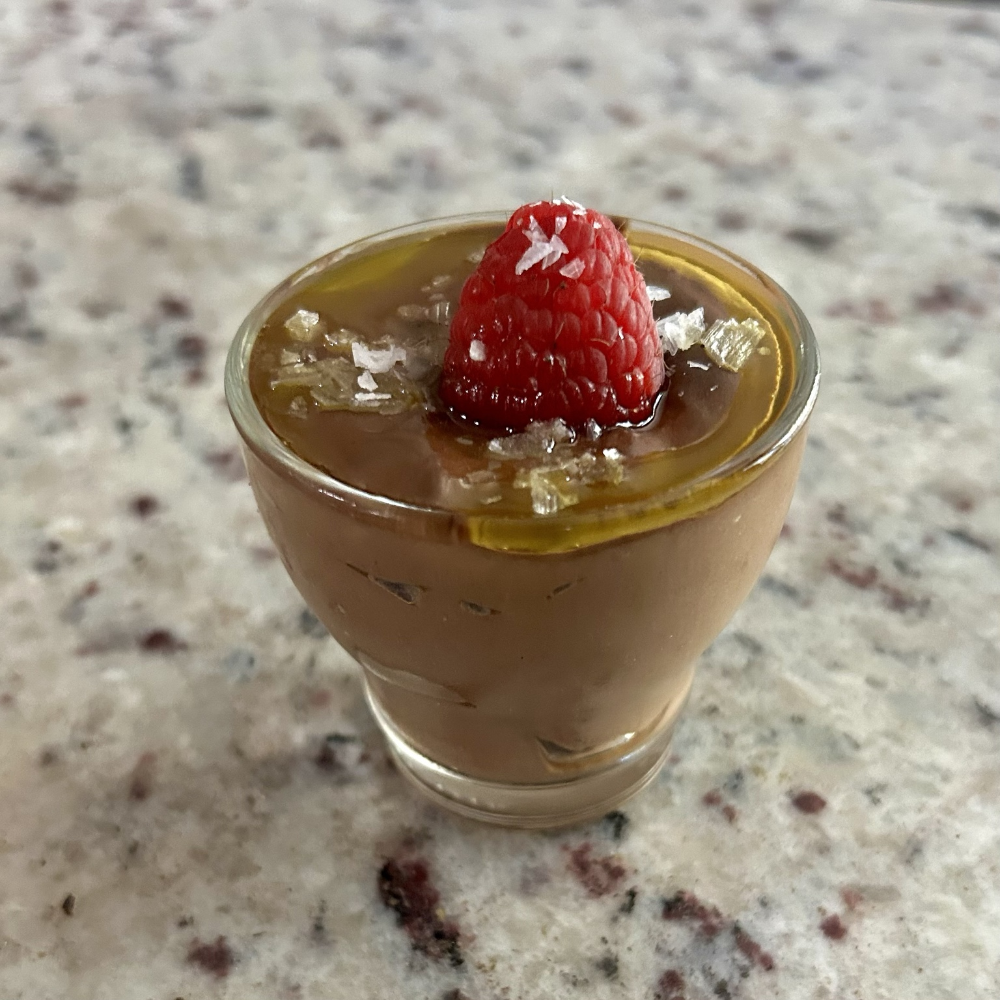
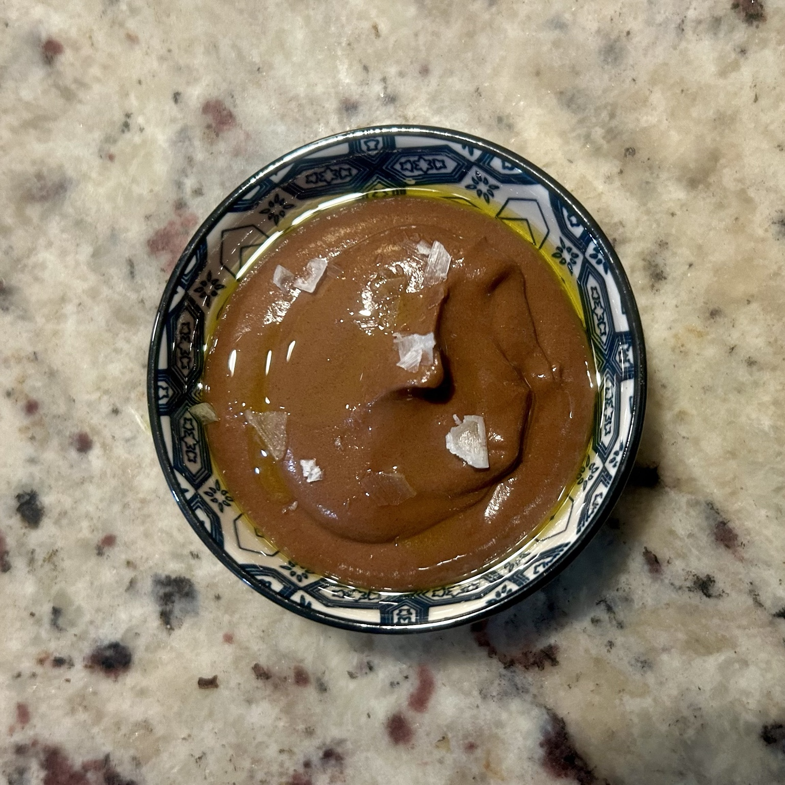

Dessert
Avocado Chocolate Pudding
A smooth, deeply chocolatey pudding made with avocado rather than cream or melted chocolate. Banana and maple syrup provide gentle sweetness; Greek yoghurt adds a little tang. Olive oil and flaky salt make the final spoonful particularly good.



Ingredients
- 1 ripe avocado (about 150 g flesh)
- 1/2 ripe banana
- 100 g plain 0% Greek yoghurt
- 20 g maple syrup
- About 3 tbsp unsweetened cocoa powder
- A pinch of salt
Method
- Scoop the avocado flesh into a blender. Add the banana, Greek yoghurt, maple syrup, cocoa powder and salt.
- Blend until completely smooth, scraping down the sides as needed. Taste and adjust the cocoa or maple syrup if desired.
- Spoon into two small glasses or a serving bowl. Serve immediately, or chill briefly for a firmer pudding.
Serving
My favourite finish is a little extra-virgin olive oil, flaky salt and a raspberry or other fresh berries. Honey or another topping also works. The olive oil should be a small drizzle, not another ingredient in the blended pudding.
Nutrition
Approximate macros for the whole pudding, before toppings: 435 kcal | 17 g protein | 53 g carbs | 25 g fat | 18 g fibre. Per half: about 218 kcal | 8.5 g protein | 26.5 g carbs | 12.5 g fat | 9 g fibre. Estimates assume about 150 g avocado flesh, half a medium banana and 0% Greek yoghurt.
Notes
There is no melted chocolate here — the flavour comes entirely from cocoa powder. A ripe avocado and thorough blending are what make the texture silky. The slightly savoury olive-oil-and-salt finish gives the chocolate a lovely contrast.